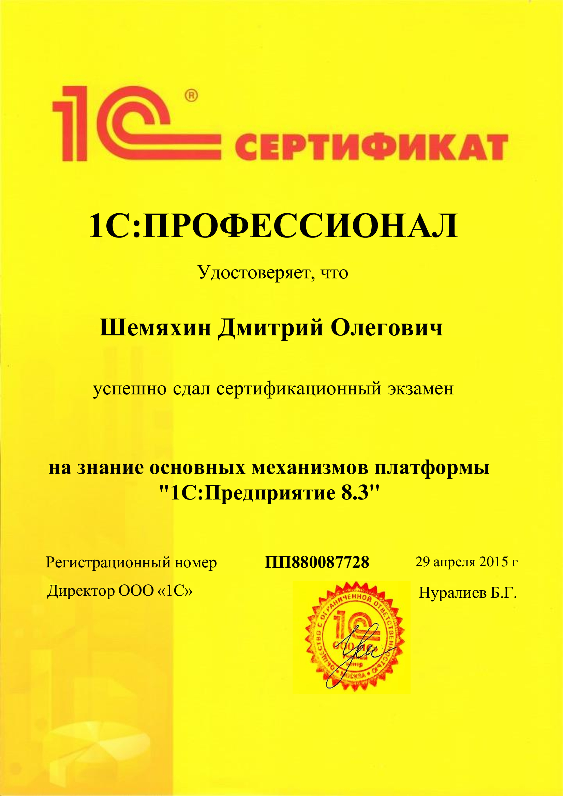
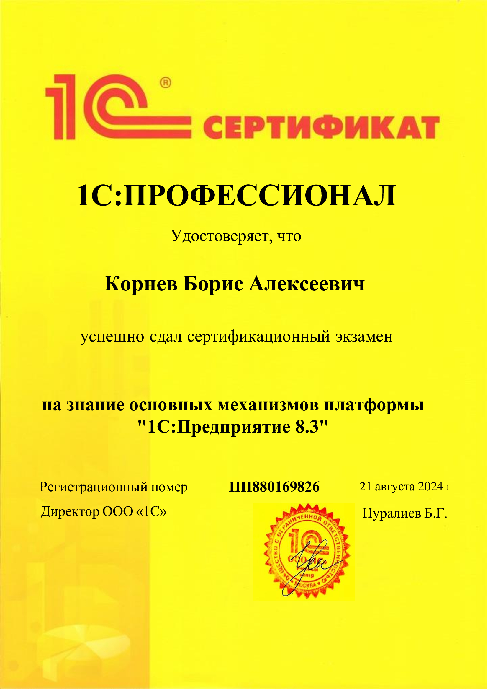
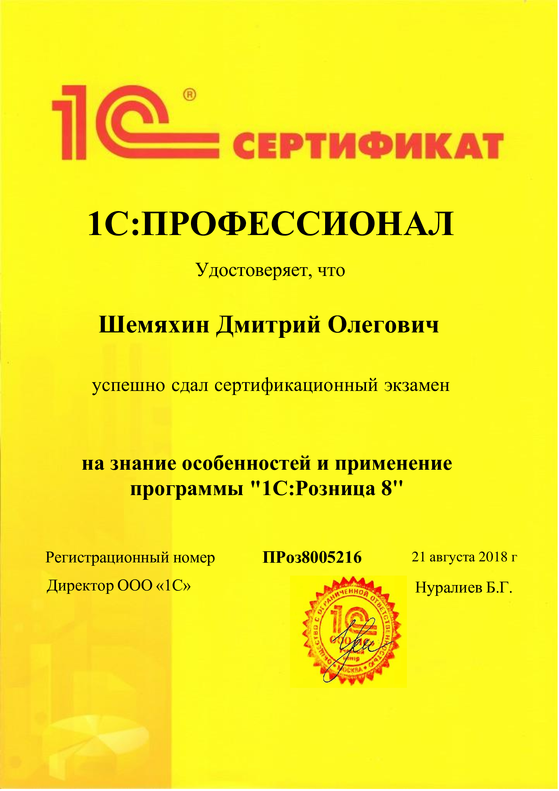
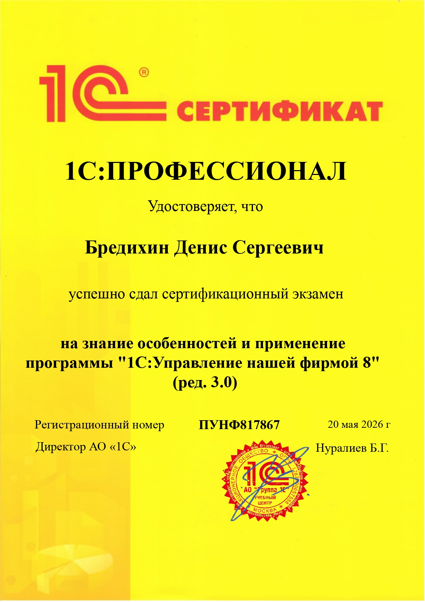
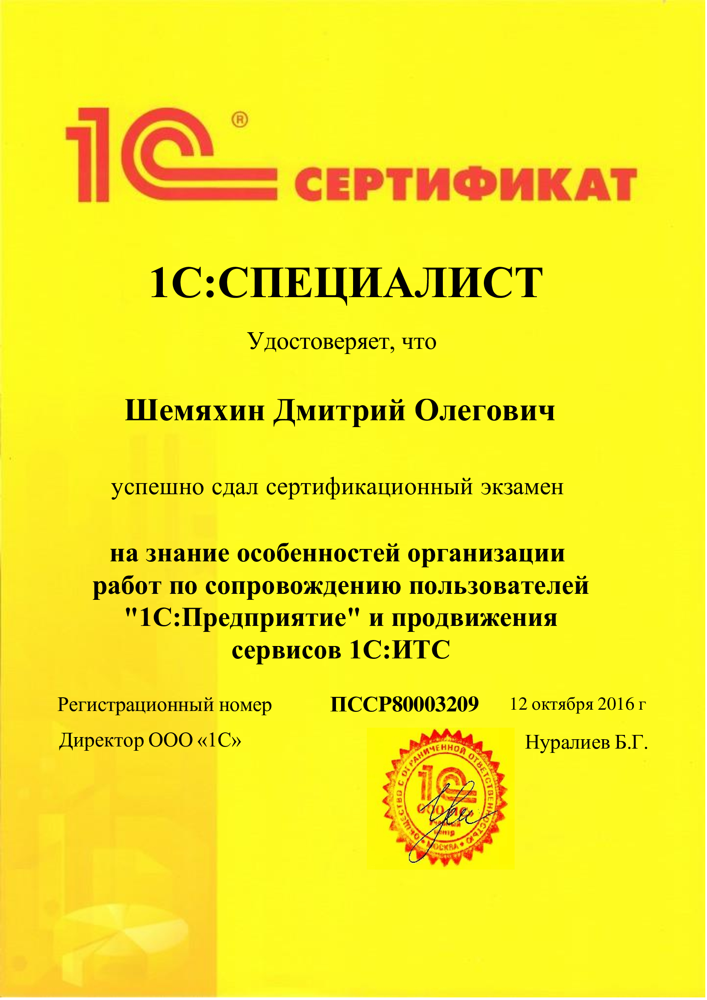
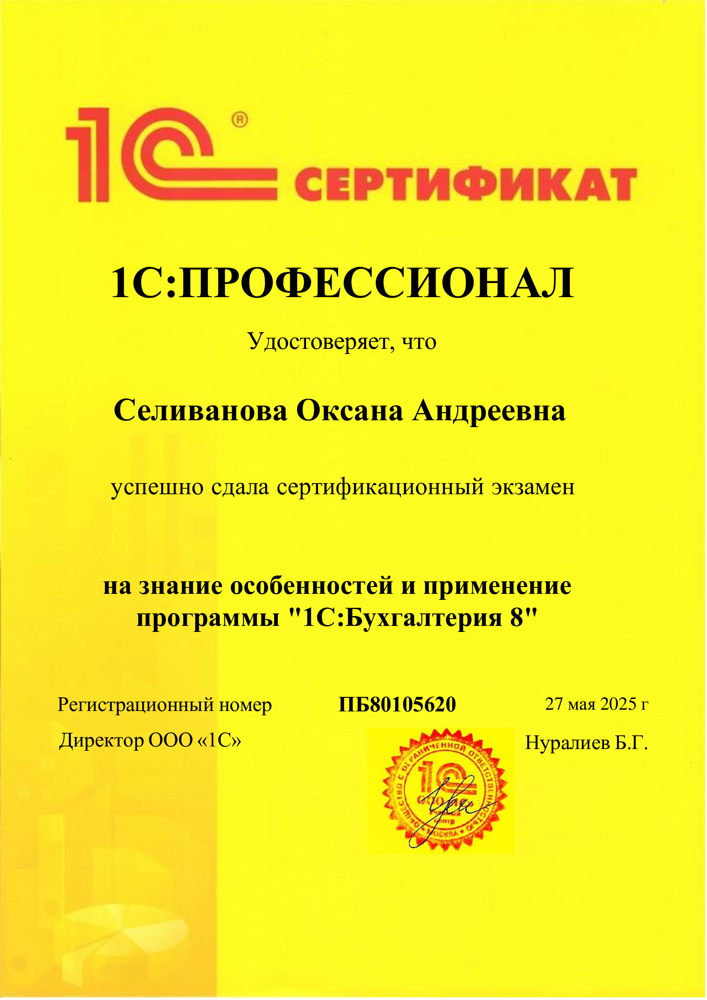
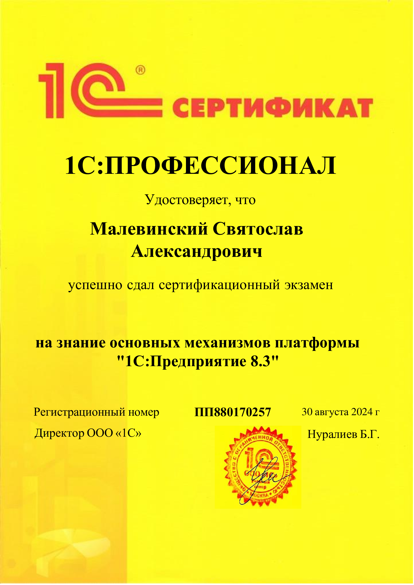
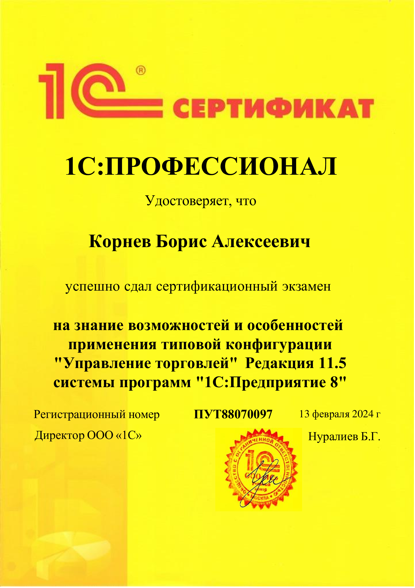
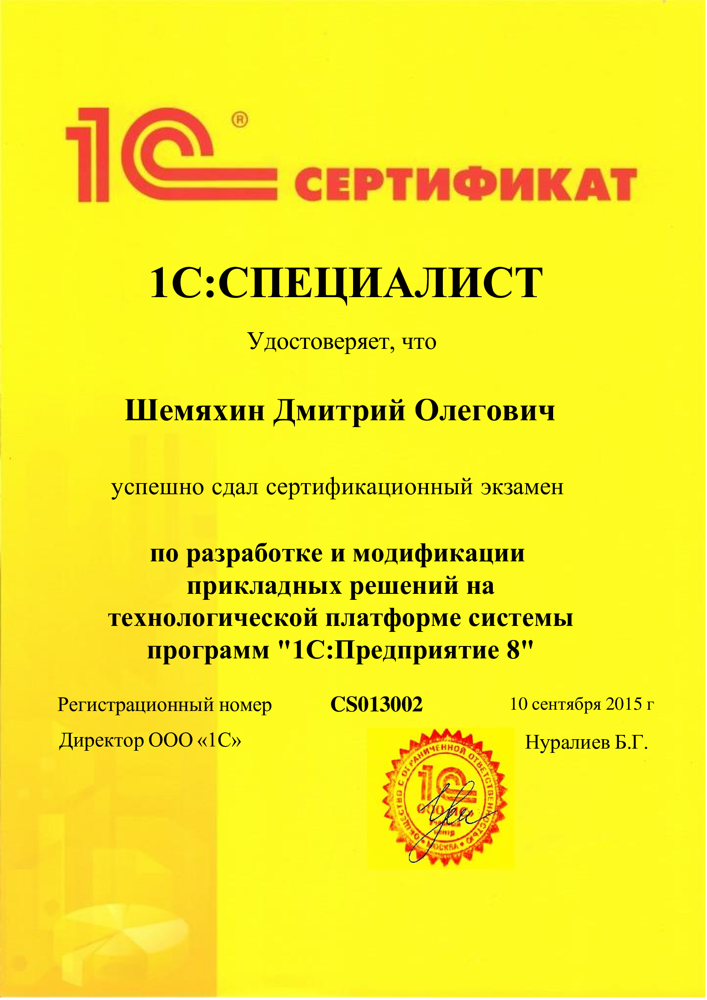
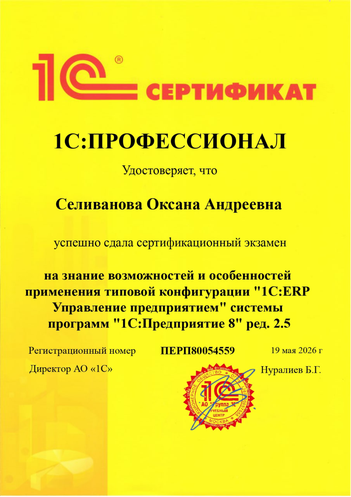

Внедрение и переходы 1С
Анализ процессов, внедрение 1С:ERP, КА 2.5, УТ 11.5 и УНФ, бесшовный переход с 1С:УПП 1.3 и 7.7 за выходные.
НАНО СОФТ / О КОМПАНИИ
Проектируем и внедряем решения на базе 1С:ERP, 1С:КА, 1С:УТ и Битрикс24: объединяем производственный учет, адресный склад, маркировку и продажи в единую цифровую систему.
ЧЕМ ЗАНИМАЕМСЯ
От предпроектного обследования и выбора архитектуры до промышленного запуска, обучения персонала и развития системы по SLA.
Анализ процессов, внедрение 1С:ERP, КА 2.5, УТ 11.5 и УНФ, бесшовный переход с 1С:УПП 1.3 и 7.7 за выходные.
Внедрение Битрикс24, двусторонний обмен с 1С, автоматизация B2B-воронок, телефонии, KPI и контроля дебиторской задолженности.
Связываем 1С с маркетплейсами (Ozon, WB, Яндекс), сайтами, «Честный Знак» (СУЗ, ТС ПИоТ, ЛМ ЧЗ) и ВетИС «Меркурий».
Создаем отраслевые модули, ИИ-ассистентов и отчеты через расширения без снятия базы 1С с типовой поддержки.
Приоритетная техническая поддержка, обновление конфигураций, настройка учета НДС 22% и УСН 5%/7%, обучение сотрудников.
Размещаем 1С на быстрых NVMe-серверах в ЦОД Tier III (152-ФЗ), устраняем блокировки PostgreSQL и сжимаем разросшиеся базы.
ПОДХОД К РАБОТЕ
Подписываем NDA до передачи баз и фиксируем этапы, сроки и бюджет в договоре.
Предоставляем заказчику прямой доступ к системе трекинга задач и ведущему архитектору проекта.
Дежурим в дни старта, помогаем закрыть первые расчетные периоды и сопровождаем систему по SLA.
Предоставляем 12 месяцев официальной гарантии по договору на все разработанные модули и настройки.
ЭКСПЕРТИЗА И КВАЛИФИКАЦИЯ
Подтверждаем квалификацию официальными сертификатами фирмы «1С» по технологической платформе и флагманским прикладным решениям.

Дмитрий Шемяхин1С:Профессионал — платформа 1С:Предприятие 8.3
Борис Корнев1С:Профессионал — платформа 1С:Предприятие 8.3
Дмитрий Шемяхин1С:Профессионал — 1С:Розница 8 Никита Бредихин1С:Профессионал — платформа 1С:Предприятие 8.3
Денис Бредихин1С:Профессионал — 1С:Управление нашей фирмой 8
Дмитрий Шемяхин1С:Специалист — сопровождение пользователей и сервисы 1С:ИТС
Оксана Селиванова1С:Профессионал — 1С:Бухгалтерия 8
Святослав Малевинский1С:Профессионал — платформа 1С:Предприятие 8.3
Борис Корнев1С:Профессионал — 1С:Управление торговлей 11.5
Дмитрий Шемяхин1С:Специалист — разработка и модификация прикладных решений
Оксана Селиванова1С:Профессионал — 1С:ERP Управление предприятиемОПЫТ В ЦИФРАХ
Реализуем проекты для машиностроения, химпрома, пищевых производств, оптовой дистрибуции, медицинских сетей и логистики по всей РФ и СНГ.
СЛЕДУЮЩИЙ ШАГ